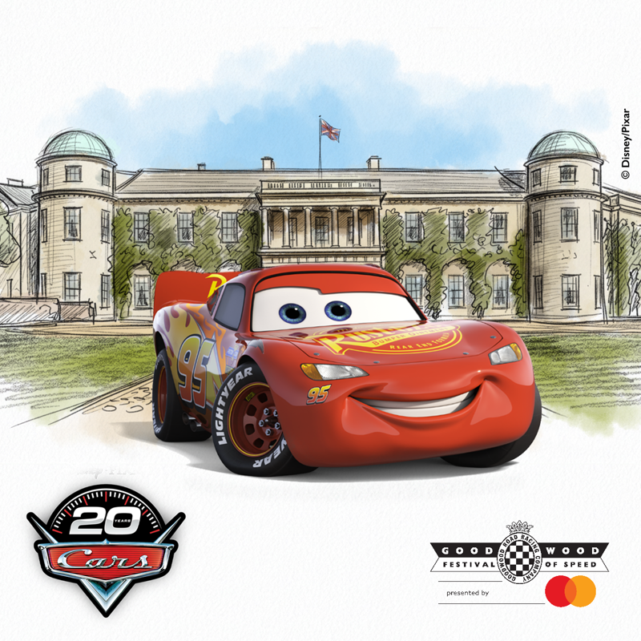

Em comemoração as 20 anos do lançamento do filme carros da Disney e PIxar, Mcqueen estará em Goodwood , com demostrações

Comemorações de varios duelos da história do Motorsport:
Ford VS Ferrari

Audi Quattro vs Lancia 037

Porsche 917 vs Ferrari
Subaru vs Mitsubishi
Formula E: GEN 4 fara demonstrações publicas
A participação de carros do Dakar Rally,com lendas como Stephane Peterhanssel, Sebastien Loeb, Carlos Sainz, e pelos atuais das equipes de fabrica da Gazzo Racing\Over Drive Racing , pelas divisões da Toyota nos ultimos anos sempre presente no evento (dessa vez tanto como Gazzo Racing e Toyota Racing) com Hank Lategan , quem sabe a particições do novo GWM Tank 700 em demosntrações